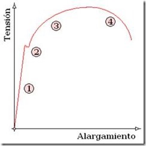

Son ensayos destructivos los que una vez realizados sobre una muestra, esta no es posteriormente utilizable o vendible. Se denominan también ensayos de propiedades mecánicas y los podemos clasificar en Estáticos y Dinámicos.
Los ensayos estáticos son:
- Dureza.
- Tracción en frío y en caliente.
- Fluencia.
- Pandeo.
- Flexión estática.
- Torsión.
Los dinámicos:
- Resistencia al choque o resiliencia.
- Desgaste.
- Fatiga.
FINALIDAD
La finalidad de los ensayos destructivos es la de valorar propiedades sobre todo mecánicas, que son las de más interés industrial, de las muestras ensayadas y por extrapolación de los resultados las propiedades de los productos que representan.
Es necesario para los Ingenieros de producto en el proceso de diseño. En fabricación para mantener los procesos bajo control y asegurar la calidad de los productos fabricados.
FUNDAMENTACIÓN
Las tres propiedades mecánicas fundamentales de los metales son la:
- COHESION: Resistencia de los átomos a separarse unos de otros.
- ELASTICIDAD: Capacidad de un material de recobrar su forma primitiva cuando cesa la causa que los deformara.
- PLASTICIDAD: Capacidad de un material de adquirir deformaciones permanentes. Se clasifica en:
- MALEABILIDAD: Facilidad a deformarse en láminas.
- DUCTILIDAD: Facilidad a deformarse en hilos.
Para determinar la cohesión se realizan ensayos de DUREZA.
Para determinar la elasticidad y la plasticidad se realizan ensayos de TRACCION y COMPRESION.
TÉCNICAS OPERATIVAS E INTERPRETACIÓN DE LOS RESULTADOS DE LOS DISTINTOS ENSAYOS
Ensayos de tracción
El ensayo de tracción de un material consiste en someter a una probeta normalizada realizada con dicho material a un esfuerzo axial de traccion creciente hasta que se produce la rotura de la probeta. Este ensayo mide la resistencia de un material a una fuerza estática o aplicada lentamente. Las velocidades de deformación en una ensayo de tensión suelen ser muy pequeñas (?=10-4 a 10-2 s-1).
En un ensayo de tracción pueden determinarse diversas características de los materiales elásticos:
- Módulo de elasticidad o Módulo de Young, que cuantifica la proporcionalidad anterior.
- Coeficiente de Poisson, que cuantifica la razón entre el alargamiento longitudinal y el acortamiento de las longitudes transversales a la dirección de la fuerza.
- Límite de proporcionalidad valor de la tensión por debajo de la cual el alargamiento es proporcional a la carga aplicada.
- Límite de fluencia o límite elástico aparente: valor de la tensión que soporta la probeta en el momento de producirse el fenómeno de la cedencia o fluencia. Este fenómeno tiene lugar en la zona de transición entre las deformaciones elásticas y plásticas y se caracteriza por un rápido incremento de la deformación sin aumento apreciable de la carga aplicada.
- Límite elástico (límite elástico convencional o práctico): valor de la tensión a la que se produce un alargamiento prefijado de antemano (0,2%, 0,1%, etc.) en función del extensómetro empleado.
- Carga de rotura o resistencia a la tracción: carga máxima resistida por la probeta dividida por la sección inicial de la probeta.
- Alargamiento de rotura: incremento de longitud que ha sufrido la probeta. Se mide entre dos puntos cuya posición está normalizada y se expresa en tanto por ciento.
- Estricción: es la reducción de la sección que se produce en la zona de la rotura.
Normalmente, el límite de proporcionalidad no suele determinarse ya que carece de interés para los cálculos. Tampoco se calcula el Módulo de Young, ya que éste es característico del material; así, todos los aceros tienen el mismo módulo de elasticidad aunque sus resistencias puedan ser muy diferentes.
Curva tensión-deformación

Curva tensión-deformación.
{kind=link}
Gráfica obtenida por computadora en el ensayo de tensión.
En el ensayo se mide la deformación (alargamiento) de la probeta entre dos puntos fijos de la misma a medida que se incrementa la carga aplicada, y se representa gráficamente en función de la tensión (carga aplicada dividida por la sección de la probeta). En general, la curva tensión-deformación así obtenida presenta cuatro zonas diferenciadas:
- Deformaciones elásticas: en esta zona las deformaciones se reparten a lo largo de la probeta, son de pequeña magnitud y, si se retirara la carga aplicada, la probeta recuperaría su forma inicial. El coeficiente de proporcionalidad entre la tensión y la deformacion se denomina módulo de elasticidad o de Young y es característico del material. Así, todos los aceros tienen el mismo módulo de elasticidad aunque sus resistencias puedan ser muy diferentes. La tensión más elevada que se alcanza en esta región se denomina límite de fluencia y es el que marca la aparición de este fenómeno. Pueden existir dos zonas de deformación elástica, la primera recta y la segunda curva, siendo el límite de proporcionalidad el valor de la tensión que marca la transición entre ambas. Generalmente, este último valor carece de interés práctico y se define entonces un límite elástico (convencional o práctico) como aquél para el que se produce un alargamiento prefijado de antemano (0,2%, 0,1%, etc.). Se obtiene trazando una recta paralela al tramo proporcional (recto) con una deformación inicial igual a la convencional.
- Fluencia o cedencia. Es la deformación brusca de la probeta sin incremento de la carga aplicada. El fenómeno de fluencia se da cuando las impurezas o los elementos dealeación bloquean las dislocaciones de la red cristalina impidiendo su deslizamiento, mecanismo mediante el cual el material se deforma plásticamente. Alcanzado el límite de fluencia se logra liberar las dislocaciones produciéndose la deformación bruscamente. La deformación en este caso también se distribuye uniformemente a lo largo de la probeta pero concentrándose en las zonas en las que se ha logrado liberar las dislocaciones (bandas de Luders). No todos los materiales presentan este fenómeno, en cuyo caso la transición entre la deformación elástica y plástica del material no se aprecia de forma clara.
- Deformaciones plásticas: si se retira la carga aplicada en dicha zona, la probeta recupera sólo parcialmente su forma quedando deformada permanentemente. Las deformaciones en esta región son más acusadas que en la zona elástica.
- Estricción. Llegado un punto del ensayo, las deformaciones se concentran en la parte central de la probeta apreciándose una acusada reducción de la sección de la probeta, momento a partir del cual las deformaciones continuarán acumulándose hasta la rotura de la probeta por ese zona.La estricción es la responsable del descenso de la curva tensión-deformación; realmente las tensiones no disminuyen hasta la rotura, sucede que lo que se representa es el cociente de la fuerza aplicada (creciente) entre la sección inicial y cuando se produce la estricción la sección disminuye, efecto que no se tiene en cuenta en la representación gráfica. Los materiales frágiles no sufren estricción ni deformaciones plásticas significativas, rompiéndose la probeta de forma brusca. Terminado el ensayo se determina la carga de rotura, carga última o resistencia a la tracción: la máxima resistida por la probeta dividida por su sección inicial, el alargamiento en (%) y la estricción en la zona de la rotura.
{kind=link}
Diagrama de tensión – deformación típico de un acero de bajo límite de fluencia.
Otras características que pueden caracterizarse mediante el ensayo de tracción son la resiliencia y la tenacidad, que son, respectivamente, las energías elástica y total absorbidas y que vienen representadas por el área comprendida bajo la curva tensión-deformación hasta el límite elástico en el primer caso y hasta la rotura en el segundo
Ensayos de compresión
Los ensayos de compresión se realizan en una máquina universal. Son más dificultosos de realizar que los de tracción, y si la probeta no tiene las caras paralelas o la máquina no está alineada ejerciendo la presión en la dirección del eje de la probeta, los resultados serán inaceptables.
En general, se admite que la resistencia a la compresión de los metales es igual a la resistencia a la tracción, y si hay alguna diferencia, siempre es mayor la resistencia a la compresión.
Es un ensayo muy extendido para hormigones.
Ensayos de Dureza
La dureza se define como la resistencia que ofrece un material a ser rayado o penetrado por otro. También se valora en función de la altura del rebote de un cuerpo al caer sobre la superficie del material ensayado.
Ensayos que utilizan el rayado:
- Ensayo de Marten. Clasifica la dureza del material en función de la anchura de la huella producida por una punta de diamante de forma establecida.
- Ensayo de Turner. Es una variante del anterior. Clasifica a los materiales en función de los gramos necesarios para producir una dimensión de huella determinada.
- Dureza a la lima. Puede determinarse aproximadamente la dureza de un acero templado por medio de una lima nueva o en buen estado.
Ensayos que utilizan la penetración:
Consisten en producir una huella en el material que se ensaya aplicando sobre él un penetrador con una presión determinada, y hallando el índice de dureza en función de la presión ejercida y la profundidad o diámetro de la huella.
Los tres métodos más utilizados son los de Brinnell, Rockwell, y Vickers y Knoop.
Ensayos que utilizan el rebote:
Se mide la dureza en función de la altura que alcanza en el rebote un cuerpo al caer de una altura fija sobre la superficie del material que se ensaya. A mayor altura de rebote, el material es de mayor dureza.
El método utilizado es el de Shore.
Ensayos de flexión
Consiste este ensayo en someter probetas de sección cuadrada o rectangular, apoyadas libremente por los extremos, a un esfuerzo aplicado en el centro o dos iguales aplicados a la misma distancia de los apoyos.
En este ensayo se mide la deformación del eje de la pieza o la flecha que se produce en el centro de la probeta, donde alcanza un valor máximo. Para que las medidas sean rigurosas se han de tener en cuenta también los desplazamientos de los apoyos bajo el esfuerzo empleado para producir la flexión.
Se puede obtener un diagrama similar al de tracción, apareciendo también un periodo elástico y otro plástico, aunque en general no suele llegar a producirse la rotura.
El ensayo de flexión se emplea para determinar el módulo de elasticidad colocando cargas diferentes P y midiendo las flechas obtenidas, pues siendo las deformaciones mayores que en los ensayos de tracción, se miden más fácilmente y con mayor precisión.
Para realizar los ensayos se utiliza una máquina Amsler universal con los accesorios adecuados.
Ensayos de resiliencia o de resistencia al choque
Consiste este ensayo en romper de un solo golpe, con ayuda de una máquina especial cuyo martillo se mueve en trayectoria pendular, una probeta de dimensiones determinadas, con una entalladura para facilitar la rotura.
A la energía consumida en la rotura de la probeta se denomina resiliencia.
Las máquinas utilizadas para los ensayos de resiliencia consisten fundamentalmente en un péndulo provisto de un martillo que se eleva hasta una altura determinada h. La probeta se coloca en la vertical del eje de giro del péndulo, en un soporte adecuado. Se libra el péndulo de la sujeción que lo mantenía, y al caer rompe la probeta y, una vez pasada la vertical, asciende hasta una altura h´, inferior, como es naturar, a h. El trabajo producido por el péndulo de peso P será entonces:
T = P x (h - h´), la resiliencia será T/S siendo S la sección de la probeta.
Para facilitar la lectura del resultado, la propia máquina lleva una escala donde según sea la altura alcanzada por el péndulo al romper la probeta, se lee la resiliencia de la misma en Kgm/Cm2.
Hay dos tipos de ensayos de resiliencia que se diferencian en el péndulo y en la probeta empleada: el de Charpy y el de Izod.
Otros ensayos
Ensayos de fluencia
En algunos casos interesa conocer como se comporta un material a una temperatura determinada. El ensayo se realiza de forma análoga al de tracción pero con la probeta dentro de un horno que mantiene la temperatura constante durante la duración del ensayo. De nuevo con este ensayo se busca conocer las propiedades a la tracción del mismo.
Ensayos de pandeo
Se realizan sobre probetas cuya relación entre longitud y sección es alta. Es un ensayo a compresión y se mide la flecha lateral alcanzada para diferentes cargas.
Ensayos de torsión
Resultan útiles para probar la resistencia a la torsión de ejes y otras piezas que trabajan de esa manera.
Ensayos de desgaste
Tienen por objeto determinar el desgaste por rozamiento de metales.
Ensayos de fatiga
En los cuales se somete al material a esfuerzos variables tanto en magnitud como en dirección. El material rompe a esfuerzos inferiores al de rotura a tracción.
Ensayos de conformación
El objeto es conocer el comportamiento de los materiales cuando se les somete a los mismos procedimientos de conformación que se emplean para las fabricaciones industriales. Los más importantes:
- Plegado.
- Embutición.
- Forja.
- Corte.
- Punzonado.
- Soldadura.
EXTRACCIÓN Y PREPARACIÓN DE PROBETAS
El fin último de los ensayos es que los resultados sean representativos de las piezas reales y que se puedan extrapolar los resultados a situaciones de funcionamiento real.
Para los ensayos de tracción, compresión y resiliencia existen normas que indican las dimensiones y preparación de las probetas.
Para los ensayos de dureza hay recomendaciones de cómo preparar las probetas para que los resultados sean representativos.